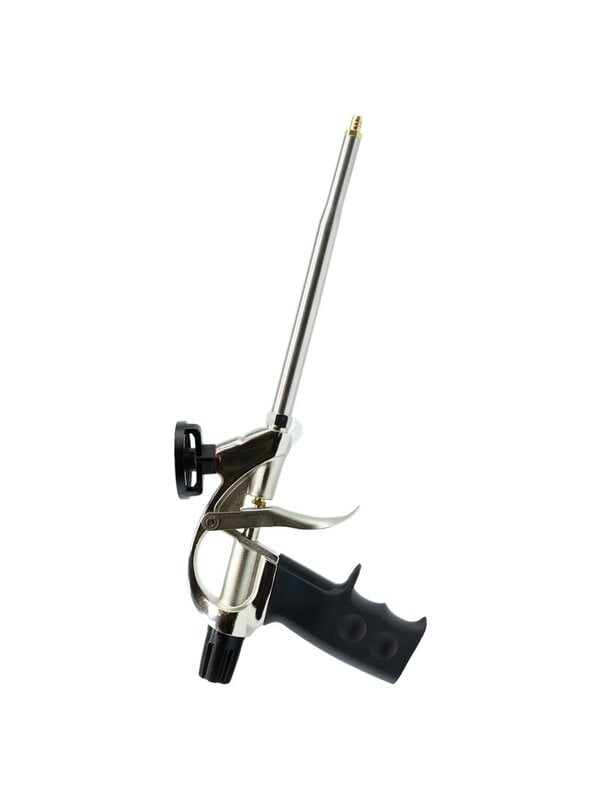
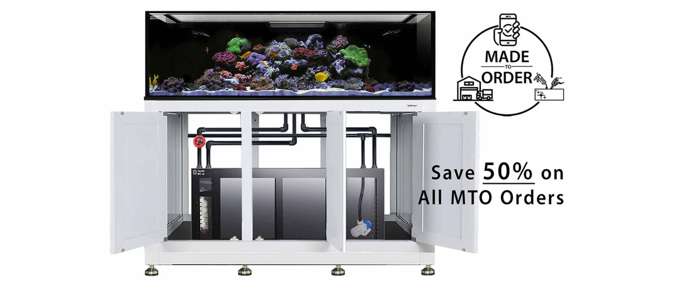
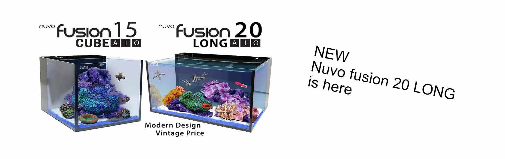

EasyPro Professional Foam Gun
Waterfall foam tool for pond and rockwork projects.
$89.99
Pumps, waterfall foam, treatments, beneficial bacteria, food, and seasonal maintenance for backyard water features.
Shop pondSeasonal and maintenance essentials

Waterfall foam tool for pond and rockwork projects.

Clean start path for pumps, bacteria, water treatment, and food.
Conditioners and test support for seasonal water changes.

Move water properly before algae and stagnation get ahead.
This page can change by month: opening, algae season, heat, fall shutdown, and winter prep.
Pond customers often need troubleshooting. This page should lead them to visit or call.